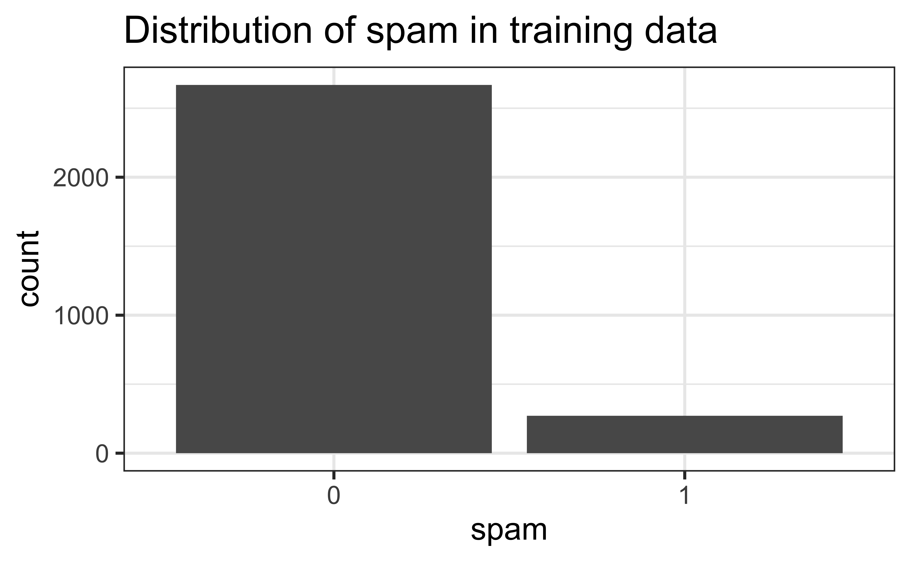
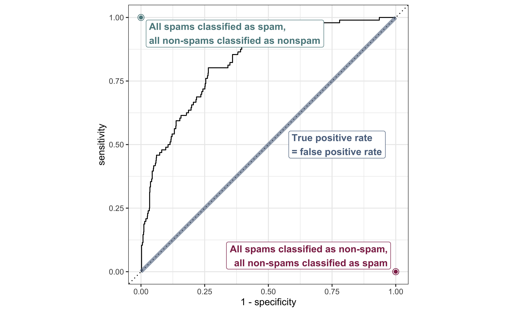
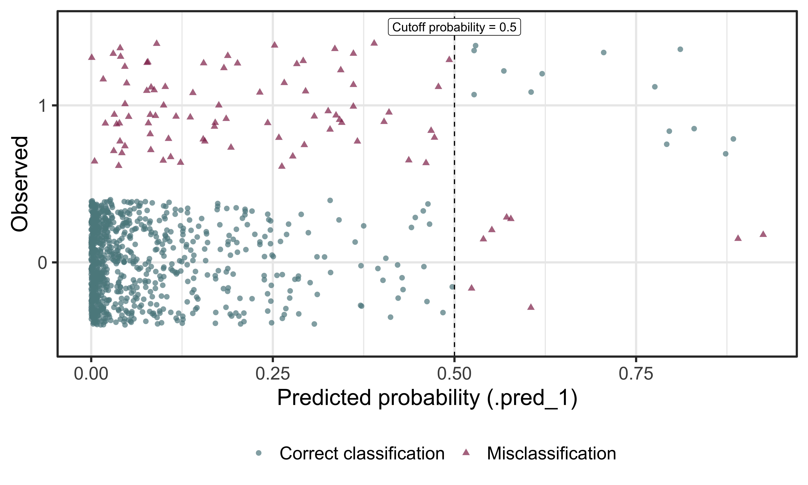
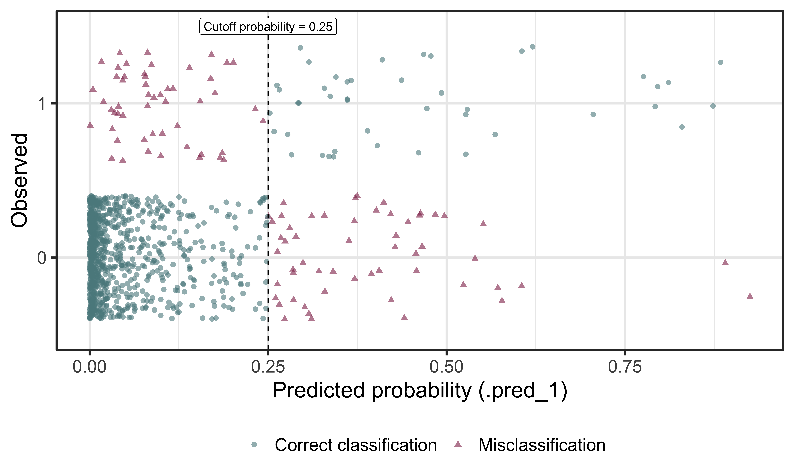
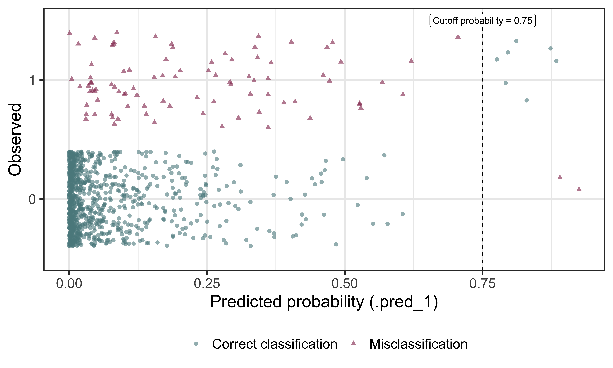
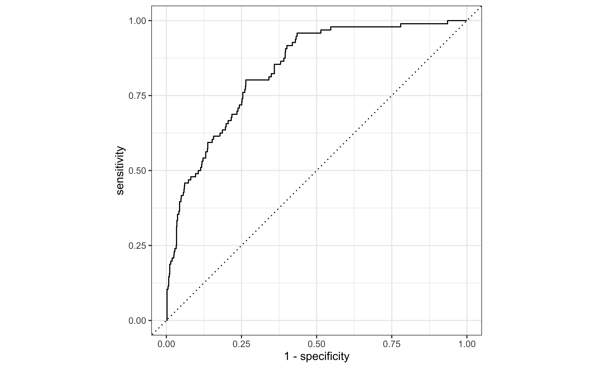

| term | estimate | std.error | statistic | p.value |
|---|---|---|---|---|
| (Intercept) | -39.151 | 7.149 | -5.477 | 0.000 |
| speciesChinstrap | -1.870 | 0.580 | -3.221 | 0.001 |
| speciesGentoo | 0.512 | 0.843 | 0.607 | 0.544 |
| flipper_length_mm | 0.195 | 0.037 | 5.295 | 0.000 |
Logistic Regression: Prediction + classification
Announcements
Lab this week: Work on project
Project draft due in your GitHub repo at 9am on
November 14 (Tuesday labs)
November 16 (Thursday labs)
Will do peer review in lab those days
Team Feedback #1 due Friday, November 10 at 11:5pm
- Will receive email from Teammates
Odds ratios practice
Let’s take a look at one of the models from Lab 06 using flipper length and species to predict the odds a penguin is large (has a body mass above average).
Interpret the coefficient of
flipper_length_mmin terms of the odds a penguin is large.Interpret the coefficient of
speciesChinstrapin terms of the odds a penguin is large.
03:00
Topics
- Building predictive logistic regression models
- Sensitivity and specificity
- Making classification decisions
Computational setup
# load packages
library(tidyverse)
library(tidymodels)
library(openintro)
library(knitr)
# set default theme and larger font size for ggplot2
ggplot2::theme_set(ggplot2::theme_bw(base_size = 20))Data
openintro::email
These data represent incoming emails for the first three months of 2012 for an email account.
- Outcome:
spam- Indicator for whether the email was spam. - Predictors:
spam,to_multiple,from,cc,sent_email,time,image,attach,dollar,winner,inherit,viagra,password,num_char,line_breaks,format,re_subj,exclaim_subj,urgent_subj,exclaim_mess,number.
Click here for more detailed information on the variables.
Training and testing split
# Fix random numbers by setting the seed
# Enables analysis to be reproducible when random numbers are used
set.seed(1109)
# Put 75% of the data into the training set
email_split <- initial_split(email)
# Create data frames for the two sets
email_train <- training(email_split)
email_test <- testing(email_split)Exploratory data analysis
The sample is unbalanced with respect to spam.

Reminder: Modeling workflow
Create a recipe for feature engineering steps to be applied to the training data
Fit the model to the training data after these steps have been applied
- Use cross-validation if deciding between multiple models
Using the model estimates from the training data, predict outcomes for the test data
Evaluate the performance of the model on the test data
Start with a recipe
Initiate a recipe
email_rec <- recipe(
spam ~ ., # formula
data = email_train # data to use for cataloging names and types of variables
)
summary(email_rec)# A tibble: 21 × 4
variable type role source
<chr> <list> <chr> <chr>
1 to_multiple <chr [3]> predictor original
2 from <chr [3]> predictor original
3 cc <chr [2]> predictor original
4 sent_email <chr [3]> predictor original
5 time <chr [1]> predictor original
6 image <chr [2]> predictor original
7 attach <chr [2]> predictor original
8 dollar <chr [2]> predictor original
9 winner <chr [3]> predictor original
10 inherit <chr [2]> predictor original
11 viagra <chr [2]> predictor original
12 password <chr [2]> predictor original
13 num_char <chr [2]> predictor original
14 line_breaks <chr [2]> predictor original
15 format <chr [3]> predictor original
16 re_subj <chr [3]> predictor original
17 exclaim_subj <chr [2]> predictor original
18 urgent_subj <chr [3]> predictor original
19 exclaim_mess <chr [2]> predictor original
20 number <chr [3]> predictor original
21 spam <chr [3]> outcome originalRemove certain variables
email_rec <- email_rec |>
step_rm(from, sent_email)Feature engineer date
email_rec <- email_rec |>
step_date(time, features = c("dow", "month")) |>
step_rm(time)Discretize numeric variables
email_rec <- email_rec |>
step_cut(cc, attach, dollar, breaks = c(0, 1))Create dummy variables
email_rec <- email_rec |>
step_dummy(all_nominal(), -all_outcomes())Remove zero variance variables
Variables that contain only a single value
email_rec <- email_rec |>
step_zv(all_predictors())Recipe: All in one place
email_rec <- recipe(spam ~ ., data = email_train) |>
step_rm(from, sent_email) |>
step_date(time, features = c("dow", "month")) |>
step_rm(time) |>
step_cut(cc, attach, dollar, breaks = c(0, 1)) |>
step_dummy(all_nominal_predictors()) |>
step_zv(all_predictors())Build a workflow
Define model
email_spec <- logistic_reg() |>
set_engine("glm")
email_specLogistic Regression Model Specification (classification)
Computational engine: glm Define workflow
Remember: Workflows bring together models and recipes so that they can be easily applied to both the training and test data.
email_wflow <- workflow() |>
add_model(email_spec) |>
add_recipe(email_rec)══ Workflow ════════════════════════════════════════════════════════════════════
Preprocessor: Recipe
Model: logistic_reg()
── Preprocessor ────────────────────────────────────────────────────────────────
6 Recipe Steps
• step_rm()
• step_date()
• step_rm()
• step_cut()
• step_dummy()
• step_zv()
── Model ───────────────────────────────────────────────────────────────────────
Logistic Regression Model Specification (classification)
Computational engine: glm Fit model to training data
email_fit <- email_wflow |>
fit(data = email_train)
tidy(email_fit) |> print(n = 31)# A tibble: 27 × 5
term estimate std.error statistic p.value
<chr> <dbl> <dbl> <dbl> <dbl>
1 (Intercept) -1.24 0.274 -4.51 6.43e- 6
2 image -1.36 0.679 -2.00 4.59e- 2
3 inherit 0.352 0.185 1.90 5.69e- 2
4 viagra 1.96 40.6 0.0482 9.62e- 1
5 password -0.941 0.387 -2.43 1.51e- 2
6 num_char 0.0572 0.0257 2.23 2.58e- 2
7 line_breaks -0.00554 0.00147 -3.77 1.66e- 4
8 exclaim_subj -0.245 0.303 -0.807 4.19e- 1
9 exclaim_mess 0.00916 0.00195 4.69 2.67e- 6
10 to_multiple_X1 -2.91 0.388 -7.50 6.37e-14
11 cc_X.1.68. -0.105 0.446 -0.236 8.14e- 1
12 attach_X.1.21. 2.33 0.385 6.06 1.37e- 9
13 dollar_X.1.64. 0.0136 0.241 0.0565 9.55e- 1
14 winner_yes 2.46 0.480 5.12 3.02e- 7
15 format_X1 -1.02 0.173 -5.88 4.07e- 9
16 re_subj_X1 -2.93 0.436 -6.72 1.81e-11
17 urgent_subj_X1 4.37 1.25 3.51 4.54e- 4
18 number_small -0.728 0.178 -4.08 4.45e- 5
19 number_big 0.261 0.255 1.03 3.05e- 1
20 time_dow_Mon 0.123 0.320 0.386 7.00e- 1
21 time_dow_Tue 0.309 0.294 1.05 2.94e- 1
22 time_dow_Wed -0.133 0.297 -0.447 6.55e- 1
23 time_dow_Thu 0.104 0.303 0.343 7.32e- 1
24 time_dow_Fri 0.280 0.292 0.960 3.37e- 1
25 time_dow_Sat 0.439 0.323 1.36 1.74e- 1
26 time_month_Feb 1.06 0.192 5.54 3.06e- 8
27 time_month_Mar 0.575 0.198 2.91 3.60e- 3Make predictions
Make predictions for test data
email_pred <- predict(email_fit, email_test, type = "prob") |>
bind_cols(email_test)
email_pred# A tibble: 981 × 23
.pred_0 .pred_1 spam to_multiple from cc sent_email time
<dbl> <dbl> <fct> <fct> <fct> <int> <fct> <dttm>
1 0.921 0.0786 0 0 1 0 0 2012-01-01 01:16:41
2 0.961 0.0391 0 0 1 0 0 2012-01-01 05:00:01
3 0.999 0.000988 0 0 1 1 1 2012-01-01 14:38:32
4 0.999 0.000591 0 0 1 1 1 2012-01-01 18:40:14
5 0.991 0.00878 0 0 1 0 0 2012-01-02 00:42:16
6 0.910 0.0902 0 0 1 0 0 2012-01-01 21:05:45
7 1.00 0.000108 0 1 1 3 0 2012-01-02 08:41:11
8 0.975 0.0248 0 0 1 0 0 2012-01-02 20:07:17
9 0.952 0.0477 0 0 1 0 0 2012-01-02 23:31:03
10 0.992 0.00819 0 1 1 0 0 2012-01-03 08:36:16
# ℹ 971 more rows
# ℹ 15 more variables: image <dbl>, attach <dbl>, dollar <dbl>, winner <fct>,
# inherit <dbl>, viagra <dbl>, password <dbl>, num_char <dbl>,
# line_breaks <int>, format <fct>, re_subj <fct>, exclaim_subj <dbl>,
# urgent_subj <fct>, exclaim_mess <dbl>, number <fct>A closer look at predictions
Which of the following 10 emails will be misclassified?
email_pred |>
arrange(desc(.pred_1)) |>
select(contains("pred"), spam) |> slice(1:10)# A tibble: 10 × 3
.pred_0 .pred_1 spam
<dbl> <dbl> <fct>
1 0.0750 0.925 0
2 0.110 0.890 0
3 0.116 0.884 1
4 0.127 0.873 1
5 0.170 0.830 1
6 0.189 0.811 1
7 0.204 0.796 1
8 0.208 0.792 1
9 0.224 0.776 1
10 0.295 0.705 1 Sensitivity and specificity
False positive and negative
| Email is spam | Email is not spam | |
|---|---|---|
| Email classified as spam | True positive | False positive (Type 1 error) |
| Email classified as not spam | False negative (Type 2 error) | True negative |
. . .
- False negative rate = P(classified as not spam | Email spam)
= FN / (TP + FN)
- False positive rate = P(classified as spam | Email not spam)
= FP / (FP + TN)
Sensitivity and specificity
| Email is spam | Email is not spam | |
|---|---|---|
| Email classified as spam | True positive | False positive (Type 1 error) |
| Email classified as not spam | False negative (Type 2 error) | True negative |
. . .
- Sensitivity = P(classified as spam | Email spam) =
TP / (TP + FN)- Sensitivity = 1 − False negative rate
- Specificity = P(classified as not spam | Email not spam) =
TN / (FP + TN)- Specificity = 1 − False positive rate
. . .
If you were designing a spam filter, would you want sensitivity and specificity to be high or low? What are the trade-offs associated with each decision?
Evaluate the performance
Receiver operating characteristic (ROC) curve+ plots the true positive rate (sensitivity) vs. false positive rate (1 - specificity).
+ Originally developed for operators of military radar receivers, hence the name.
email_pred |>
roc_curve(
truth = spam,
.pred_1,
event_level = "second"
) |>
autoplot()
ROC curve, under the hood
email_pred |>
roc_curve(
truth = spam,
.pred_1,
event_level = "second"
)# A tibble: 978 × 3
.threshold specificity sensitivity
<dbl> <dbl> <dbl>
1 -Inf 0 1
2 3.36e-10 0 1
3 2.27e- 9 0.00226 1
4 8.69e- 7 0.00339 1
5 9.89e- 7 0.00452 1
6 1.43e- 6 0.00565 1
7 9.16e- 6 0.00678 1
8 1.03e- 5 0.00791 1
9 2.58e- 5 0.00904 1
10 3.35e- 5 0.0102 1
# ℹ 968 more rowsROC curve

Evaluate the performance: AUC
email_pred |>
roc_auc(
truth = spam,
.pred_1,
event_level = "second"
)# A tibble: 1 × 3
.metric .estimator .estimate
<chr> <chr> <dbl>
1 roc_auc binary 0.836. . .
The area under the curve (AUC) can be used to assess how well the logistic model fits the data
AUC=0.5: model is a very bad fit (no better than a coin flip)
AUC close to 1: model is a good fit
Make decisions
Cutoff probability: 0.5
Suppose we decide to label an email as spam if the model predicts the probability of spam to be more than 0.5.
| Email is not spam | Email is spam | |
|---|---|---|
| Email classified as not spam | 877 | 82 |
| Email classified as spam | 8 | 14 |
cutoff_prob <- 0.5
email_pred |>
mutate(
spam_pred = as_factor(if_else(.pred_1 >= cutoff_prob, 1, 0)),
spam = if_else(spam == 1, "Email is spam", "Email is not spam"),
spam_pred = if_else(spam_pred == 1, "Email classified as spam", "Email classified as not spam")
) |>
count(spam_pred, spam) |>
pivot_wider(names_from = spam, values_from = n) |>
kable(col.names = c("", "Email is not spam", "Email is spam"))Confusion matrix
Cross-tabulation of observed and predicted classes:
cutoff_prob <- 0.5
email_pred |>
mutate(spam_predicted = as_factor(if_else(.pred_1 >= cutoff_prob, 1, 0))) |>
conf_mat(truth = spam, estimate = spam_predicted) Truth
Prediction 0 1
0 877 82
1 8 14Classification

Cutoff probability: 0.25
Suppose we decide to label an email as spam if the model predicts the probability of spam to be more than 0.25.
| Email is not spam | Email is spam | |
|---|---|---|
| Email classified as not spam | 830 | 52 |
| Email classified as spam | 55 | 44 |
cutoff_prob <- 0.25
email_pred |>
mutate(
spam_pred = as_factor(if_else(.pred_1 >= cutoff_prob, 1, 0)),
spam = if_else(spam == 1, "Email is spam", "Email is not spam"),
spam_pred = if_else(spam_pred == 1, "Email classified as spam", "Email classified as not spam")
) |>
count(spam_pred, spam) |>
pivot_wider(names_from = spam, values_from = n) |>
kable(col.names = c("", "Email is not spam", "Email is spam")). . .
Classification

Cutoff probability: 0.75
Suppose we decide to label an email as spam if the model predicts the probability of spam to be more than 0.75.
| Email is not spam | Email is spam | |
|---|---|---|
| Email classified as not spam | 883 | 89 |
| Email classified as spam | 2 | 7 |
cutoff_prob <- 0.75
email_pred |>
mutate(
spam_pred = as_factor(if_else(.pred_1 >= cutoff_prob, 1, 0)),
spam = if_else(spam == 1, "Email is spam", "Email is not spam"),
spam_pred = if_else(spam_pred == 1, "Email classified as spam", "Email classified as not spam")
) |>
count(spam_pred, spam) |>
pivot_wider(names_from = spam, values_from = n) |>
kable(col.names = c("", "Email is not spam", "Email is spam"))Classification

Use ROC curve
Use the ROC curve to determine the best cutoff probability

# A tibble: 10 × 3
.threshold specificity sensitivity
<dbl> <dbl> <dbl>
1 0.0769 0.736 0.792
2 0.0770 0.736 0.781
3 0.0780 0.737 0.781
4 0.0785 0.737 0.771
5 0.0786 0.738 0.771
6 0.0787 0.739 0.771
7 0.0789 0.739 0.760
8 0.0802 0.740 0.760
9 0.0802 0.741 0.760
10 0.0805 0.742 0.760Recap
- Built predictive logistic regression models
- Defined and calculated sensitivity and specificity
- Made classification decisions based on sensitivity and specificity